Principais Biomas
Explore os biomas mais incríveis do mundo de Minecraft!
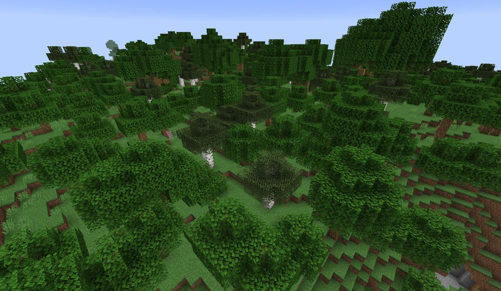
Floresta
Florestas são o bioma mais comum em Minecraft, cujo clima é temperado, representando florestas sazonais com muitos carvalhos e algumas bétulas.
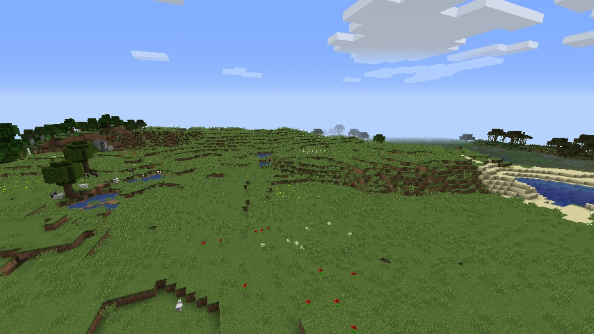
Planície
As planícies são biomas temperados que se assemelham a pastos. Elas estão entre os primeiros biomas adicionados ao jogo. Existem duas variantes do bioma nas planícies da família do bioma.
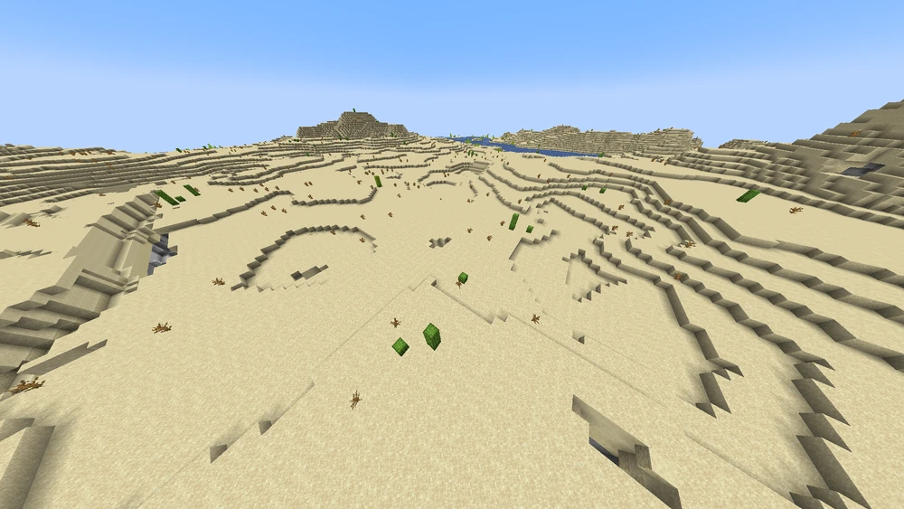
Deserto
O deserto é um bioma quente e expansivo, que consiste principalmente em areia.
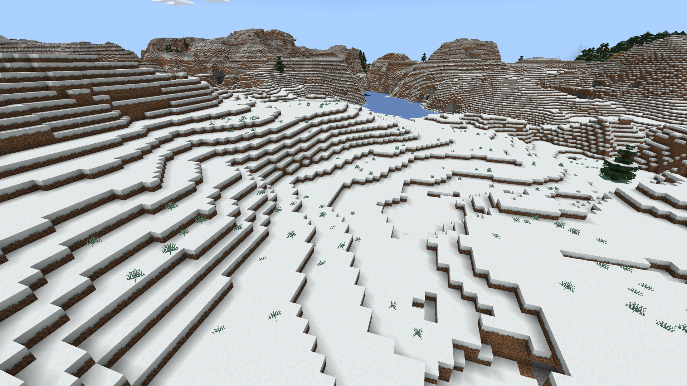
Neve
Neve (ou neve no topo) é um bloco de cobertura normalmente formado por queda de neve.
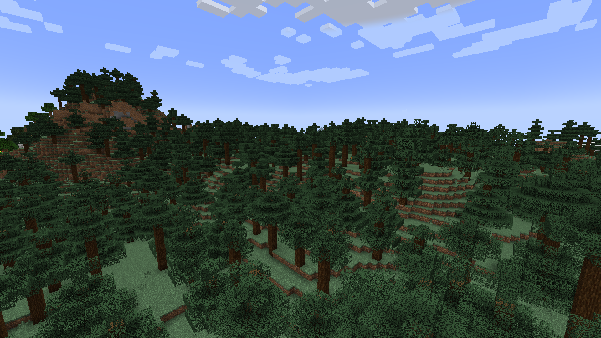
Taiga
A taiga é um bioma úmido e gelado que consiste numa pastagem florestada com samambaias pequenas e grandes, grama pálida verde-azulada e árvores de abeto e pinheiro. As raposas comumente geram aqui.
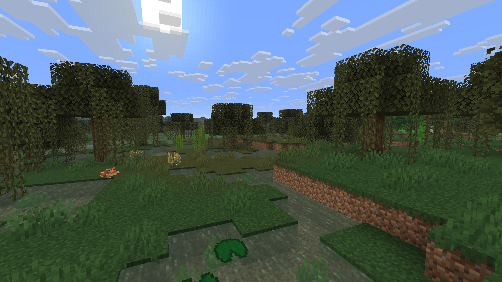
Pantano
Os pântanos são, em sua maioria, biomas planos, com elevações baixas o suficiente para ir abaixo do nível do mar em grande parte da área.
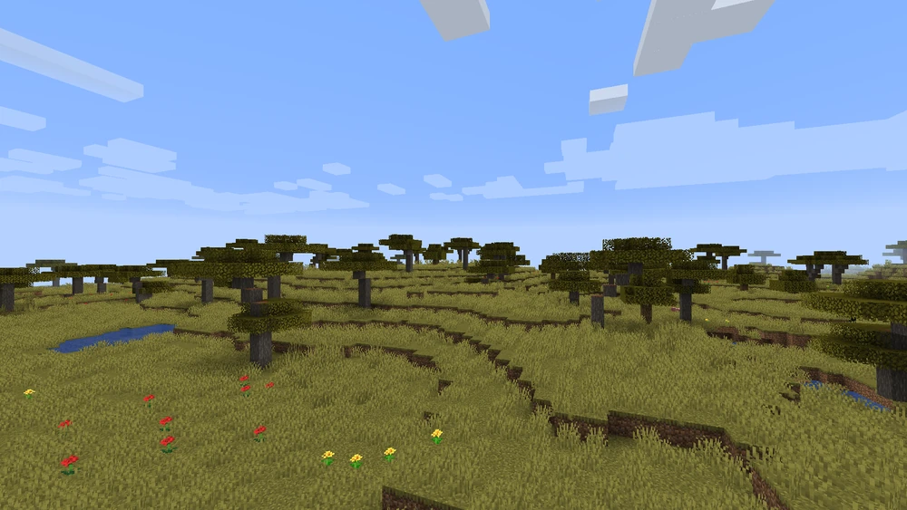
Savana
As savanas são, em sua maioria, biomas planos gerados ao lado de planícies e desertos, com grandes quantidades de grama alta em todo o terreno.
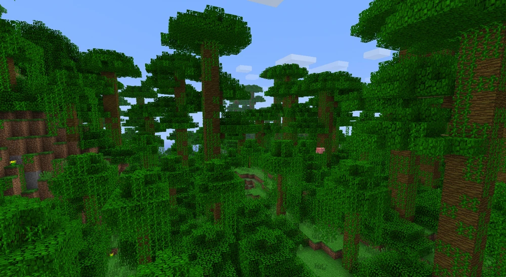
Selva
O bioma de Selva (Jungle) no Minecraft é uma região exuberante, conhecida por sua vegetação densa, árvores gigantescas e recursos exclusivos.
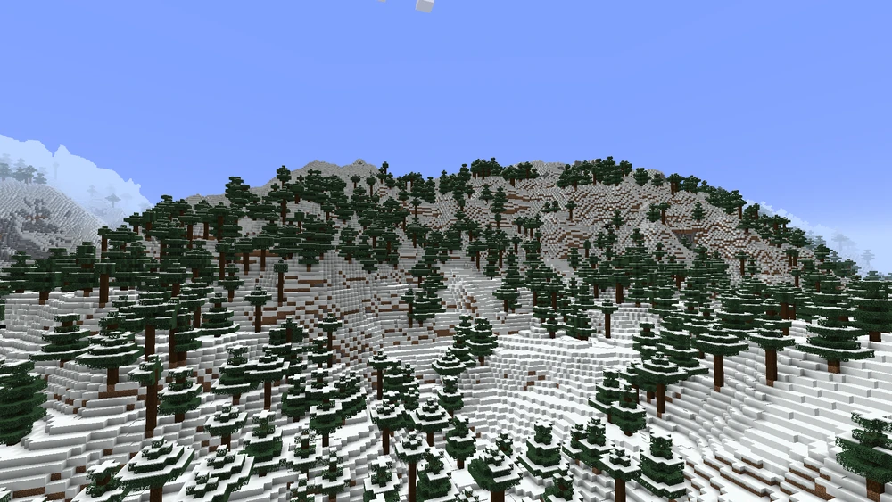
Montanhas
Região elevada com picos íngremes, blocos de pedra e camadas de neve no topo. Abriga cabras, minério de esmeralda e cavernas profundas ricas em recursos.
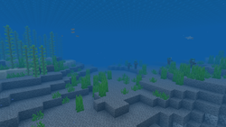
Oceano
Grande extensão de água que separa os continentes e varia de temperatura. Esconde naufrágios, ruínas, monumentos oceânicos, recifes de coral e criaturas como golfinhos e tartarugas.
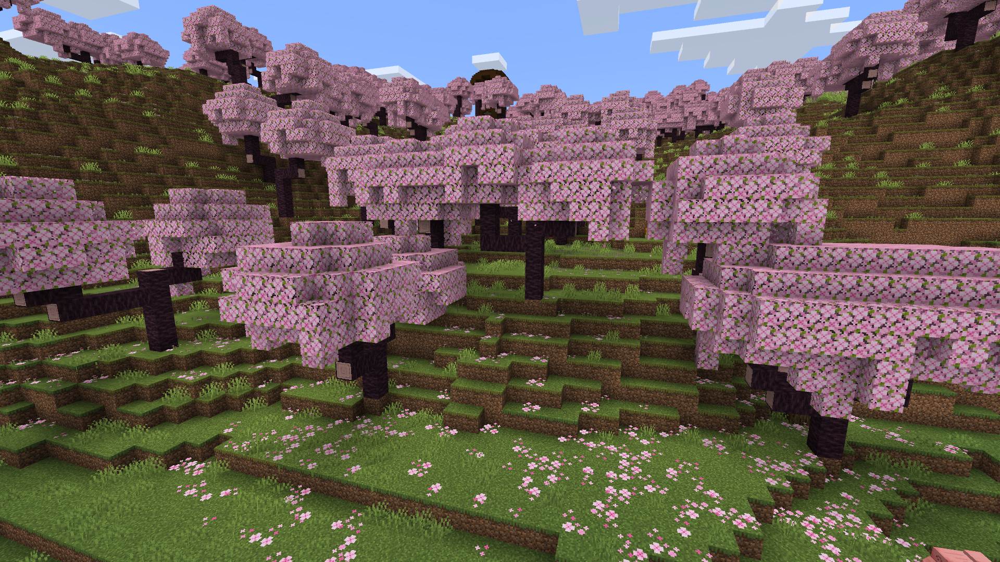
Cerejeiras
Bioma vibrante localizado nas encostas de montanhas, coberto por árvores de folhas rosas e pétalas no chão. Atrai abelhas e fornece madeira rosada muito usada em construções decorativas.
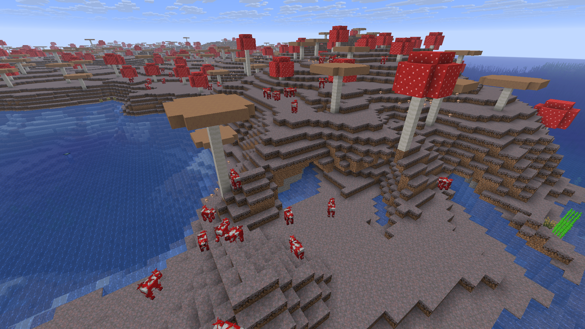
Cogumelos
Ilha rara coberta por micélio e cogumelos gigantes no lugar de árvores comuns. É o bioma mais seguro da superfície porque nenhum monstro hostil aparece lá naturalmente, além de ser o único lar das coguvacas.

Mods
Melhore sua experiência

Biomas
Descubra novos biomas

Mobs
Conheça os Mobs

Curiosidades
Fatos incríveis sobre Minecraft